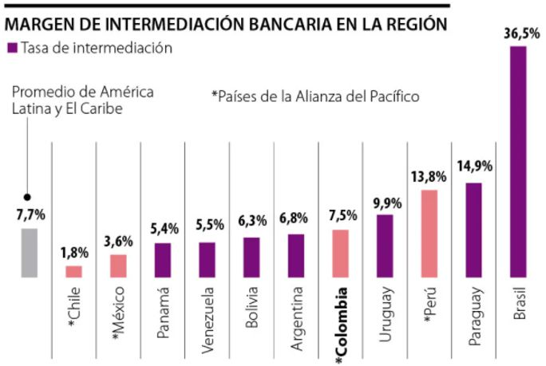
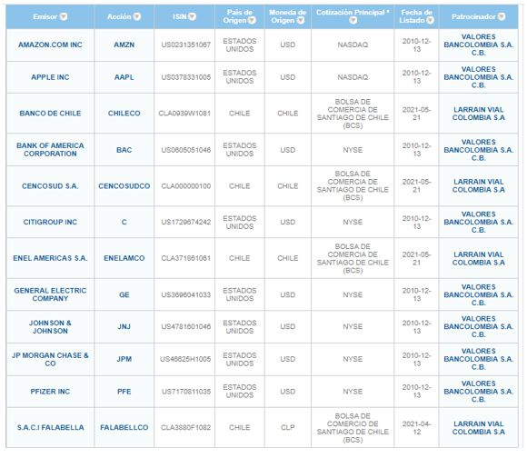

Introducción
En julio del 2001 nace la bolsa de valores de
Colombia BVC como resultado de la fusión por
disolución de las bolsas de valores de Bogotá,
Medellín y Occidente. Sus primeros directivos
diseñan y ponen en práctica la estrategia a
mediano plazo para democratizar el acceso
a las transacciones en la naciente bolsa
de valores, en ese orden, dan prioridad al
programa educativo con foco en los estudiantes
universitarios denominado Concurso bolsa
millonaria (Bolsa millonaria, 2019). El concurso
empieza a ser difundido entre las universidades
del país con aceptable acogida dado la escasa
infraestructura técnica para acceder en tiempo
real a las transacciones del mercado bursátil.
Las primeras capacitaciones se llevaron a cabo
por parte de funcionarios de la BVC y luego
fueron acogidas por universidades visionarias
como EAFIT, los Andes, la universidad de
Antioquia, del Valle y Bucaramanga (BVC,
2009).
Hasta el 3 de julio de 2001 fecha de creación de
la BVC (Superfinanciera de Colombia, 2021), el
mercado de capitales en sus dos subsistemas,
mercado de capitales intermediado y el
desintermediado; el primero en sus dos
versiones, banca comercial, fue la heteronomía
del sistema financiero colombiano hasta la
entrada de la BVC, y el segundo en la banca de
inversión; de otro lado, el mercado de capitales
desintermediado institucionalizado en el
mercado bursátil, significó la democratización
tanto para emisores como para inversores. La
banca comercial o tradicional, con su objeto
social de captar y colocar recursos, dejando de
lado el análisis de riesgo, no tenía competidores
para sus operaciones en el territorio nacional.
La entrada en funcionamiento de la BVC
significó el paso de la banca comercial a la
banca de inversión, en la medida que la BVC
demandó profesionales idóneos en la gestión,
estructuración, valoración de empresas, análisis
de riesgos e incorporación de la tecnología a todos sus procesos administrativos y operativos
para dar cobertura nacional e internacional.
El despertar del siglo XXI permitió la luz de
las Startup o empresas con uso intensivo en la
tecnología en el marco de la globalización de la
internet. Lo anterior dejó en obsolescencia las
jornadas a viva voz en las cuales los agentes se
reunían de manera física en recintos cerrados
para ofertar y demandar títulos valores. La
visión estratégica de los líderes de la BVC se
da a la tarea de evaluar y establecer puntos
BVC con pantallas pasivas, con el objetivo
de captar un mayor público y de esa manera
iniciar un proceso de fidelización al mediano y
largo plazo. Ciudades como Bogotá, Medellín
y Cali fueron receptoras de dichos puntos BVC
donde las personas podían asistir y observar
en tiempo real, las jornadas de compraventa de
los emisores listados en la bolsa local y, realizar
transacciones a través de los clásicos asesores
bursátiles mediante llamadas telefónicas. La
BVC, además, tiene lugar en alrededor de
diecinueve ciudades, a través de acuerdos
con instituciones de educación superior y
cámaras de comercio. La Superintendencia
Financiera, es la encargada de vigilar la BVC
por ser proveedor de infraestructura y emisor
de valores (Rankia, 2021).
Metodología
Para viabilizar la expansión de la BVC las
universidades arriba mencionadas escogieron
a sus mejores profesores para recibir la
capacitación impartida por funcionarios de la
naciente bolsa de valores de Colombia sobre
los mercados de acciones, bonos, papeles
del Estado y mercado OTC en el contexto
de la normatividad vigente (Bolsa de Valores
de Colombia, 1999) a la fecha de realizar los
diferentes seminarios. Después de recibida la
capacitación desde la BVC, las universidades
se dieron a la tarea de retroalimentar los
conocimientos, técnicas y herramientas para
ofertar nuevos cursos, diplomados e incluso permear sus currículos con asignaturas dirigidas al mercado de
capitales desintermediado
o bursátil.
La caracterización del mercado de capitales, subsistema mercado de capitales intermediado
o bancario se ubica al nivel del mercado monetario, mercado de divisas y otros mercados
financieros OTC, ver figura No.1, se identifica porque sus títulos valores se redimen máximo
a un año, siendo el más representativo los certificados de depósito a término fijo CDT a
treinta días; los sobregiros bancarios son cupos preaprobados a los titulares de la cuentas
corrientes las cuales disponen de talonarios con cheques y de las tarjetas débito para su
operación en cajeros electrónicos. Los depósitos en cuenta corriente no devengan intereses.
Entre los medios de pagos, el uso de los cheques ha entrado en obsolescencia ante la
disrupción de la tecnología al servicio de los medios de pago (Franco Cuartas, Tendencia
en medios de pago y la pertinencia del dinero en efectivo, 2020)
El sistema bancario en Colombia desde la gran
crisis de los años ochenta del siglo XX, viene
en un proceso de reestructuración empresarial
(Franco Cuartas, Estructura y evolución del
sistema financiero colombiano de la banca
comercial a la banca de inversión., 2018). Es
de acotar que los ingresos operacionales
dependen del margen de intermediación MI,
el cual viene dado por la diferencia entre la
tasa activa menos la tasa pasiva. En la figura
No. 2, se establece el ranking del MI dónde
Colombia tiene un margen de intermediación
7.5% ligeramente inferior al promedio
latinoamericano 7.7% de acuerdo con cifras
del banco mundial con corte a febrero del
año 2021 y citado por el diario económico la
república.

Figura 2 Ranking margen de intermediación América Latina y el Caribe.
Fuente. www.larepublica.co
Los establecimientos crediticos más
representativos de la banca comercial en
Colombia pertenecen al conglomerado
o Grupoaval (Grupoaval, 2019), banco de
Bogotá, banco AVVillas, banco de occidente
y banco popular en manos del industrial Luis
Carlos Sarmiento Angulo mencionado por la
revista Forbes (Revista Forbes, 2021) al mes
de abril del 2021 como el colombiano más
adinerado con una fortuna de USD 11.000
millones. Como competidores directos de los
bancos del Grupoaval aparecen Bancolombia
en manos del grupo empresarial antioqueño
GEA y el banco Davivienda del grupo Bolívar
(Grupobolivar, 2021).
En la figura No.3 el mercado de capitales
se clasifica según el tipo de obligación en
mercado de deuda o renta fija y el mercado
de acciones o renta variable. El titulo valor
representativo del mercado de deuda son
los bonos cuyos fundamentales son valor
nominal, plazo, tasa emisor o cupón y la tasa
de mercado, tasa de descuento o rentabilidad
del inversionista Yield; el gobierno nacional
financia gasto e infraestructura con los títulos
de endeudamiento soberano TES digno
exponente de un bono emitido en moneda
local COP pesos colombianos. Las acciones que cotizan en el mercado colombiano son
las ordinarias o comunes, las preferenciales y
algunas privilegiadas. Las primeras otorgan
los denominados derechos VOVO`S voz y voto
más el dividendo ordinario siempre y cuando
sea aprobado y decretado por la asamblea
general de accionistas, que en el contexto
colombiano debe celebrarse a más tardar el
31 de marzo de cada año.
Tal como se indica en la figura No.3 según el
tipo de maduración, diferencia entre la fecha
de vencimiento y la fecha de negociación, el
mercado es primario o secundario; el primero
se caracteriza por la emisión, o creación,
de títulos valores a través de la cadena
de abastecimiento del sistema financiero
colombiano donde los recursos monetarios
van a la tesorería del emisor previo el pago de
la comisión por la intermediación en el proceso
de colocación por terceros. Por su lado, el
mercado secundario está constituido para dar
liquidez a los títulos creados en el mercado
primario antes de la fecha de redención por
parte del respectivo emisor; se resalta que
los valores monetarios no van a la tesorería
del emisor, sino que pasan de las manos del
comprador al vendedor del título respectivo.
Según sea la entrega del activo financiero
figura No.3 nos enfrentamos al mercado de
efectivo, spot o de contado y el mercado
de derivados, a plazos, futuros o mercado
de instrumentos de cobertura. Por último, la
taxonomía de mercados nos habla por tipo de
vencimiento, mercado monetario, inferior a un
año; o mercado de capitales superior a un año
El mercado de capitales desintermediado
representado institucionalmente por las
sociedades comisionistas de bolsa (Secretaria del senado, 2021), tienen como ingresos
operacionales las comisiones derivadas de
los contratos de resultados pactados con los
potenciales inversionistas y emisores en el
mercado tanto de deuda como de acciones.
Estas comisiones pueden ser pactadas en
cifras absolutas (papeletas mínimas) o relativas
(porcentajes sobre rentabilidades en el caso
del mercado de deuda); las comisiones en el
mercado de renta variable son cargadas en
la posición corta como en la posición larga
independiente del beneficio del titular.
En cuanto al método, técnica e instrumento
para describir, caracterizar e identificar las
potenciales bondades para transar con los
instrumentos de deuda, se estructuró y
analizó en hojas de cálculo las bondades del
arbitraje para entrar o salir en los títulos de
endeudamiento soberano reconocidos como
títulos de tesorería. El análisis se fundamenta
en el modelo de Macaulay (Franco Cuartas,
Riesgo en renta fija, 2008) , y las posibilidades
que este modelo proporciona desde la
conceptualización y cálculo de la duración
como se ilustra en la figura No.4, la elasticidad
o duración modificada, la convexidad o
impacto en el precio antes segundos cambios
en la tasa de descuento.
Figura 4. Modelo Macaulay para determinar el valor de la duración de los
títulos de deuda.
Figura 5. Descuento de los flujos futuros de caja para determinar el precio de la deuda.
Para el análisis de sensibilidad, riesgo, elasticidad
o duración modificada, se debe recurrir a la
serie histórica de los rendimientos de mercado
y determinar la volatilidad overnight, que en
términos del cálculo diferencial no es otra
cosa que hallar el impacto en el precio ante la
variación en las tasas de mercado, es decir, la
primera derivada del precio ante cambios en
el Yield como se ilustra en el conjunto de la
figura No.6.
Para tomar posiciones frente al proceso de
arbitraje se debe cuantificar el error por convexidad, la convexidad “C” en los bonos o
títulos de deuda se determina en función de
la segunda derivada del precio ante cambios
en la tasa de mercado. Finalmente, el error
viene dado por e=(1/2)*C(dy)2
, donde (dy) es
la variación de la tasa de mercado overnight.
Cuando hablamos de la variación real de los
títulos de deuda nos referimos a la variación
relativa real y a la variación absoluta real que en
ambos casos captura el error por convexidad
en escenarios a la baja como a la alza en las
tasas de descuento.
Figura 6. Modelos para determinar el riesgo en títulos de tesorería TES
La bolsa de valores de Colombia actúa en el mercado de capitales desintermediado bajo las
modalidades de mercado de contado T+3 para el cumplimiento de sus operaciones y el mercado
de derivados o mercado a plazos (Hull, 2021); este último nace como respuesta a la incertidumbre y
riesgo que presentan los activos subyacentes que soportan los contratos regulados, léase, futuros
y opciones; y los contratos no regulados, swaps, forwards y FRA`s (Forwards Rates Agreement),
estos acuerdos futuros sobre tasas de interés pueden ser tipo CAP, COLLAR o FLOOR según sea
el perfil coberturista o especulador de los agentes que intervienen en el contrato.
El modelo de Black, Sholes y Merton permiten predecir el comportamiento de los activos
subyacentes, acciones, bonos, commodities y divisas a partir de las series de tiempo disponibles
en la analítica de datos soportado en Power BI, Tableau y Weka para argumentar la toma de
decisiones sobre los términos del contrato en el mercado spot y cumplimiento futuro. Para el
caso del mercado de derivados en Colombia (Bolsa de Valores de Colombia, 2021) sobre divisas,
se transan operaciones forwards delivery non delivery del COP contra el USD. Las acciones de
Ecopetrol, grupo sura, Grupoaval son subyacentes de renta variable que estructuran contratos
de futuros; al igual que los TES24, TES25 subyacen a los contratos de futuros sobre la deuda
interna colombiana en pesos; de manera genérica la TRM origina los contratos de futuros sobre
el USD/COP ver figura No.7.
Figura 7. Comportamiento mercado de derivados financieros en la BVC.
Resultados
La tarea emprendida desde la BVC estuvo
inscrita en un país saliendo de la gran recesión
económica del periodo presidencial de Andrés
Pastrana Arango (Colombia info, 2021) del
año 1998 al año 2002. En ese escenario, se
estructuró y se realizó la primera emisión de
acciones de la estatal Interconexión Eléctrica
S.A (ISA) como consta en el repositorio de la
empresa estatal.
Entre el 27 de noviembre y el 20 de
diciembre de 2000, llevamos a cabo el primer
programa de colocación masiva de acciones.
Se colocaron 115 millones de acciones
entre 62,016 ciudadanos e inversionistas
institucionales que representaron el 13,62%
de la compra. La acción privilegiada de ISA se
inscribió en las tres bolsas de valores del país
y empezó a transarse el 9 de febrero de 2001
(Interconexión Eléctrica S.A, 2019).
Fue a la naciente BVC a la cual le correspondió
toda la cadena de abastecimiento para soportar las transacciones de las acciones de ISA en el mercado
secundario ante un público
mayoritariamente institucional y las personas naturales que con visión compraron los títulos
en la emisión primaria a COP/acción 1.000 y, que a la fecha de digitar éstas líneas el precio de
mercado se ubica en COP 22.050 después de hacer precios máximos en los primeros meses del
año 2021, como se observa en la figura No. 8.
Después de la exitosa emisión accionaria de ISA
se instala entre los inversionistas institucionales
y en particular, entre las personas naturales, la
confianza para asistir y participar en primera
línea del portafolio de productos que oferta
los sistemas administrados (Bolsa de Valores
de Colombia, 2021) por la BVC, acciones, TES
y por allá en septiembre primero de 2008,
en plena crisis subprime, el advenimiento
del mercado de derivados (Bolsa de Valores
de Colombia, 2021). Es de resaltar que en la
actualidad Los sesenta y siete emisores que
en la actualidad están negociando en la Bolsa
de Valores de Colombia (BVC) (que suman
ochenta nemotécnicos en total) no tienen
los mismos años de vida bursátil, treinta y
cinco de ellos llevan más de treinta años
cotizando; es decir que entraron a negociarse
antes de 1988 ver figura No. 9. A parte de los
emisores listados en la figura No. 9, se suman
Ecopetrol, ISA, Bancolombia, Cementos Argos,
Grupo éxito, Grupo de seguros suramericana,
Comercializadora eléctrica S.A Celsia, Fabricato
y Mineros de Antioquia entre otros para
un total de 173 emisores entre sociedades
anónimas cerradas y abiertas, estas últimas son
que cotizan de manera regular en plataforma
digital de la bolsa de valores de Colombia.
En noviembre de 2007 llega por emisión
primaria las acciones ordinarias de la estatal
petrolera Empresa colombiana de petróleos
Ecopetrol con un paquete mínimo de mil
acciones a COP 1.400 al mercado secundario
de la bolsa de valores de Colombia, después de
ser ofertadas en los 32 departamentos del país
y en más de 1.000 municipios colombianos,
los nuevos suscriptores, personas naturales, se
estimaron en 540 mil ciudadanos (Ecopetrol,
2021). El mercado bursátil internacional calificó
de exitosa y democrática la colocación del
10.1% del capital accionario de la compañía
Ecopetrol.
El comportamiento de la cotización de Ecopetrol
a diferencia del título de Interconexión Eléctrica
S.A ha presentado volatilidad, ver figura No.
10, debido a la alta correlación positiva con
la cotización del barril de crudo, al principio
con el WTI o el denominado liviano y luego
con el crudo BRENT o pesado. Toda persona
que compró acciones en la emisión primaria
a noviembre de 2017 ha recibido COP 1.578
por acción en dividendos, lo que significa el
127.14% de la inversión inicial sin contar con
la marginalidad del valor de mercado de la
acción.
A pesar de los esfuerzos de democratización
desde la estrategia corporativa de la BVC y
sus alianzas con la academia y las cámaras
de comercio del país, los colombianos, a la
hora de tomar decisiones de financiación e
inversión, siguen el camino ortodoxo que les
brinda la banca tradicional con su producto
estrella los certificados de depósito a término
fijo como los CDT, donde a marzo de 2021
por cada COP 100 captado por el mercado de
capitales intermediado el 81% son a término
fijo (Superfinanciera de Colombia, 2021).
El pago sistemático de dividendos de las
empresas listadas en el registro nacional de
valores y que cotizan en la BVC, hasta entrada
la pandemia marcó un Yield significativo que
en la mayoría de los casos supero con creces el
valor de la tasa fija asociada a los certificados
de depósito a término fijo, mención especial
merece el rendimiento vía dividendo Yield de
la petrolera estatal Ecopetrol que ha superado
el 6.5% promedio efectivo anual.
El algoritmo de búsqueda llevó a los directivos
de la BVC a su internacionalización utilizando
el vehículo de los ADR`s, recibo de depósito
americano, de la estatal petrolera Ecopetrol,
Cementos Argos, Grupoaval, Interconexión
Eléctrica S.A y las acciones pioneras que
abrieron el camino del parque bursátil en
Wall Street, estamos hablando de los títulos
del banco industrial colombiano BIC, hoy,
absorbido por una serie de reestructuraciones
empresarial por el grupo empresarial
antioqueño y para mayor ilustración por parte
del grupo Bancolombia. A la fecha con Procaps
son trece títulos de renta variable que hacen
presencia en Nueva York (Diario económico
portafolio, 2021).
En el año 2009 se integran las bolsas de
Colombia, Santiago de Chile, Lima y más
adelante en junio de 2014, se adhiere la
bolsa de valores de México para conformar
el mercado integrado latinoamericano MILA
(Mila, 2021) para negociar en los cuatro países
títulos de renta variable lo cual a corte de junio
de 2020 acumula una capitalización bursátil de
MMUSD 627.680.206.445 ver Figura No. 11.
Figura 11. Capitalización bursátil MILA y sus bolsas participantes.
Las estrategias de internacionalización del mercado de capitales desintermediado no se detienen
y es así, como desde la BVC se pueden acceder a títulos de renta variable y ETF`s del mercado
global tipo Amazon, Apple, Bank Of América y Citigroup, entre otros desde la plataforma
colombiana mercado global colombiano Ver figura No. 12

Figura 12. Listado de acciones extranjeras negociables desde la BVC.
Fuente.www.bvc.com.co
El avance de las startup ha llegado al mercado
de la BVC a través del ecosistema Fintech con
empresas tipo Trii, una APP para compraventa
de acciones locales con inversión mínima y
costos de comisión muy por debajo de los
costos de transacción asociados a las firmas
comisionistas tradicionales. Otra de las
novedades Fintech, y liderada en esta ocasión
por la BVC, nos ubica en el programa llamado
A2censo (A2censo BVC, 2021), cuyo propósito
es vincular emisores del segmento MiPymes
e inversionistas minoritarios bajo la figura
crowdfunding. El portal de Colombia Fintech
manifiesta que la Superfinanciera facultó el
estreno de transacciones de Lulo Bank, banco
100% de propiedad de Jaime Gilinski. Emerge
como una nueva institución financiera, en
la que los colombianos podrán administrar
su capital, pedir préstamos y hasta lograr
certificaciones. Todo, 100% digital. Lo anterior
aparte de Nequi de Bancolombia, Daviplata de
Davivienda, Movii y el neobanco IRIS que entra
a funcionar en Colombia (Colombia Fintech,
2021).
Sin la intención de cerrar los hallazgos en
la presente aproximación para caracterizar
el subsistema del mercado de capitales
colombiano, dejar de lado la disrupción
que está emergiendo desde el año 2008
en el tema de las criptomonedas, sería una
posición simplista, determinista con foco en
sistemas cerrados, que para nada aportaría
a la discusión. El banco de la Republica en
Colombia afirma que las operaciones con
criptoactivos, para referirse a la criptomonedas,
no son actividades ilegales ni legales, sólo hay
un vacío normativo (Banco de la República de
Colombia, 2021)
Reflexiones
Dada la naturaleza del presente escrito
y su objetivo general de caracterizar el
mercado de capitales colombiano desde
la mirada académica, presentamos a título
de apertura de discusión la bondad de la
apertura democrática para que cada vez
ingresen más personas naturales al mercado
desintermediado y apropien el portafolio de productos que vienen en ascenso exponencial
como resultado de incorporar los canales
digitales derivados de la analítica de datos y la
robotización de agentes de mercado como la
APP Trii, Nequi, Daviplata, Movii, A2censo, IRIS
y “Sophia”, robot humanoide desarrollado por
la compañía, con sede en Hong Kong, Hanson
Robotics para transar en el mercado accionario
tipo Nasdaq.
El compromiso y alianzas estratégicas
desarrolladas por la BVC y el sector académico
vienen dando profundización a la cultura
bursátil y abriendo trayectorias posibles de
inversión más allá del mercado de capitales
intermediado, lo anterior aunado también a la
alianza con Fintech Colombia para dar apertura
al primer neobanco denominado IRIS.
La regulación financiera, fiscal y redistribución
de la riqueza en el país son parámetros
de referencia sin los cuales los esfuerzos
pedagógicos, tecnológicos y de alianzas
estratégicas llegarán a feliz término el proceso
de arranque del mercado de capitales a
un mayor número de personas naturales
como mecanismos de emprendimiento de
capitalización para la empresa fundamental de
toda sociedad: “Ud. Mismo S.A”.
Son los jóvenes universitarios e incluso
estudiantes de los centros de formación
profesional a nivel de técnicos y tecnologías
que dadas sus habilidades y destrezas digitales
por medio de acceso móvil desde sus celulares
se sienten atraídos para transar, de manera
offline, los movimientos reales en la BVC y de
otras plazas bursátiles.
Por último, y no menos importante, es la
disrupción que se está gestando desde el
mundo de los criptoactivos con su producto
estrella el bitcoin. La discusión está abierta en
el mundo académico, en el alto gobierno y,
con apropiación de facto, por parte de un gran
número de personas que asumen el alto riesgo que implica esta alternativa de inversión, a nivel
internacional en función de sus características,
al margen de no estar avalada por entidad
financiera central alguna, pero, que sin duda
integra grandes retos como medio de pago ágil
y aceptado por establecimientos de comercio
que se suman cada día más, e incluso Estados.
Referencias
- A2censo BVC. (2021).Campañas para invertir.
Recuperado o a partir de https://a2censo.com/
- Banco de la República de Colombia. (2021). de
Recuperado a partir de https://www.banrep.gov.co/es/publicaciones/documento-tecnicocriptoactivos
- Bolsa de Valores de Colombia. (1999).
Recuperado a partir de https://www.bvc.com.co/pps/tibco/portalbvc/Home/Empresas/Listado+de+Emisores
- Bolsa de Valores de Colombia. (2021). Recuperado
a partir de https://www.bvc.com.co/pps/tibco/portalbvc/Home/Mercados/enlinea/acciones
- Bolsa de Valores de Colombia. (2021).80 años del
mercado de valores en Colombia Recuperado
a partir de https://www.bvc.com.co/recursos/Files/Acerca_de_la_BVC/Ochenta_Anos_Mercado_de_Valores.pdf
- Bolsa millonaria, (2019). Recuperado a partir de
http://www.bolsamillonaria.com.co/
- Cano-Uribe, J.G., (2013).Grupo empresarial
antioqueño: tradición y poder dentro del
estado. [Tesis de Pregrado, Universidad
Pontificia Bolivariana]. Recuperado a partir
de https://repository.upb.edu.co/bitstream/handle/20.500.11912/1437/monografia%20juan%20guillermo%20cano%20uribe%20.pdf?isAllowed=y&sequence=1
- Colombia Fintech. (2021).Nace un nuevo banco en
Colombia de la mano de la millonaria familia
Giñlinski. Recuperado a partir de https://www.colombiafintech.co/novedades/nace-unnuevo-banco-en-colombia-de-la-mano-de-lamillonaria-familia-gilinski
- Colombia info. (2021). Andrés Pastrana Arango
(1998-2002) Recuperado a partir de https://www.colombia.com/colombia-info/historiade-colombia/presidentes-de-colombia/andrespastrana-arango/
- Ecopetrol, (2021). Somos la 2ª empresa con mejor
reputación en Colombia. Recuperado a partir
de https://www.ecopetrol.com.co/wps/portal
- Forbes Staff. (2021).Millonarios en Colombia 2021,
Luis Carlos Sarmiento Angulo. . Recuperado a
partir de https://forbes.co/2021/04/06/editorspicks/millonarios-en-colombia-2021-luiscarlos-sarmiento-angulo/
- Franco Cuartas, F. (2018). Estructura y evolución
del sistema financiero colombiano de la banca
comercial a la banca de inversión. Revista
MODUM, 1, 13 - 34. Recuperado a partir de
https://revistas.sena.edu.co/index.php/Re_Mo/article/view/1648
- Franco Cuartas, F. (2020). Tendencia en medios
de pago y la pertinencia del dinero en efectivo.
Revista MODUM, 2, 148-156. Recuperado a
partir de http://revistas.sena.edu.co/index.php/Re_Mo/article/view/3027
- Franco-Cuartas, F. (2008). Riesgo en renta
fija. Caso Colombiano inversión en TESR
2008 Económicas CUC, 29 (1), 227 - 244.
Recuperado a partir de https://repositorio.cuc.edu.co/handle/11323/2883?show=full
- Grupoaval. (2022).Nuestras Compañías.
Recuperado a partir de https://www.grupoaval.com/wps/portal/grupo-aval/aval/nuestrascompanias/bancos
- Grupobolivar, (2021).Sostenibilidad. Recuperado
a partir de https://www.grupobolivar.com.co/wps/portal/sostenibilidad/informes/banco_davivienda
- Hull, J. (2021). Options, futures, and other
deerivatives, 11th edition. Pearson. Recuperado
a partir de https://www.pearson.com/us/highereducation/program/Hull-Options-Futures-andOther-Derivatives-RENTAL-11th-Edition/PGM100003054007.html
- Interconexión Eléctrica S.A. (2019). Información
Bursátil y Emisiones. Recuperado a partir
de https://www.isa.co/es/inversionistas/inversionistas-informacion-bursatil-yemisiones/
- Portafolio (2021).Con procaps, serian 13 firmas
colombianas en bolsas de Wall Street
Recuperado a partir de https://www.portafolio.co/economia/finanzas/con-procaps-serian13-firmas-colombianas-en-bolsas-de-wallstreet-550117
- Rankia (2020).Bolsa de valores de Colombia:
definición, historia y cursos. . Recuperado a
partir de https://www.rankia.co/blog/analisiscolcap/3527011-bolsa-valores-colombiadefinicion-historia-cursos
- Secretaria del senado. (2021). Descripción básica
de las entidades sometidas a la vigilancia de
la superintendencia bancaria. Recuperado a
partir de http://www.secretariasenado.gov.co/senado/basedoc/estatuto_organico_sistema_financiero.html
- Superfinanciera de Colombia. (2021). Resultados
del sistema financiero colombiano marzo de
2021. Recuperado a partir de https://www.superfinanciera.gov.co/inicio/informesy-cifras/informes/informe-actualidad-del-sistema-financiero-colombiano/resultados-del-sistema-financiero-colombianomarzo-de--10107921
- Superfinanciera de Colombia. (2021). Sistema
Integral de Información del Mercado de
Valores. Recuperado a partir de https://www.superfinanciera.gov.co/inicio/simev-61086